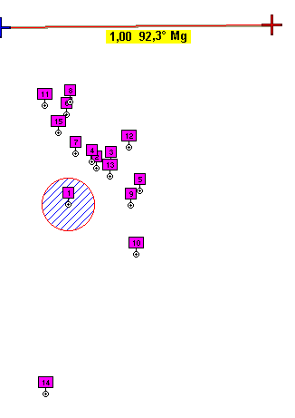

|  |
Número
Datum usado
UTM,1 European
1979
UTM,2 WGS84
UTM,3 Postdam
UTM,4 Geodeticum
1949
UTM,5 NAD27
UTM,6 Pico
de las Nieves
UTM,7 Rome
1940
UTM,8 Ireland
1965
UTM,9 LC
5 Astro
UTM,10 Merchich
UTM,11 Observatorio
1966
UTM,12 Austrian
UTM,13 CH-1903
UTM,14 DOS 1968
UTM,15 Marco Astro
El datum Europeo
1950 no muestra ninguna diferencia apreciable en relación al Europeo
1979, y como coinciden, lo he eliminado de la lista
La línea
superior muestra una estima de la distancia obtenida con OZI: exactamente
1 km entre las dos marcas.
Recuerda, el círculo
marcado tiene un radio que corresponde a 100 metros
|